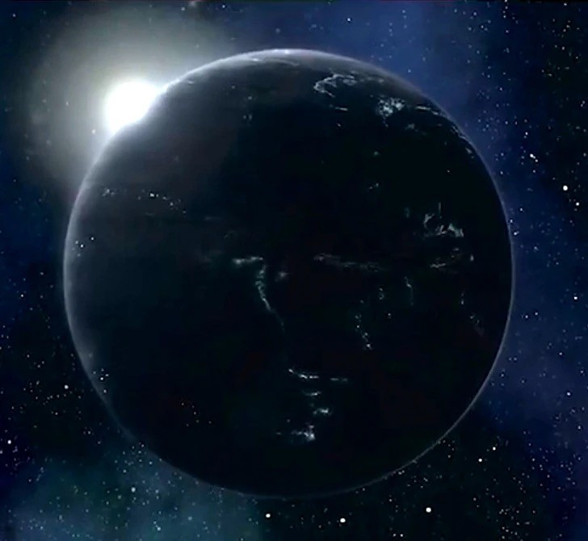

Nostramo
| Nostramo | |
|---|---|
| Homeworld of Konrad Curze and the Night Lords (destroyed) | |
 Nostramo in the Great Crusade, from a survey of the VIII Legion Artwork © Games Workshop | |
| Region | Eastern Fringe, near the Ghoul Stars |
| Classification | Hive world; adamantium mining world; Legion recruiting world |
| Star | A dying star, shadowed by the moon Tenebror |
| Capital | Nostramo Quintus |
| Ruler | Konrad Curze, the Night Haunter (before 896.M30 – 984.M30) |
| Compliance | 896.M30, with the Delegation of Light |
| Fate | Destroyed by the Night Lords fleet, 984.M30 |
| Remnant | Fortress-moon Tenebror; taken by the Blood Angels in the Great Scouring |
Nostramo was a hive world of the Eastern Fringe, a world without daylight, and the homeworld of the primarch Konrad Curze and the VIII Legion, the Night Lords. Its five great hives were ruled by crime and terror until Curze, hunting criminals by night as the "Night Haunter", imposed order through fear and made himself the world's king. The Emperor found him in 896.M30, in the event remembered in Nostramo Quintus as the Delegation of Light.[1][2]
When Curze returned after the long years of the Great Crusade and found his world fallen back into corruption, he destroyed it. In 984.M30 the lances of the Night Lords fleet broke its crust and its unstable core tore it apart. Only its fortress-moon, Tenebror, survived.[3]
Geography
[edit]Nostramo circled a dying star whose weak light could not pierce the planet's smog, and its moon passed between planet and sun in step with the world's turning, so that the inhabited band of the planet knew only night. Noon was hardly brighter than midnight. Only the rich could afford even the dim blue light-strips set in the ceilings of the spire palaces.[2]
The planet's crust was rich in adamantium, its chief export, and thousands of foundries and chemical works covered its surface and fouled the air. Five hive cities, named in sequence from Nostramo Prime to Nostramo Quintus, the largest, lay along the inhabited zone. The planet's core was geologically unstable, a fact that would decide its end.[1]
History
[edit]Before the Night Haunter
[edit]Nostramo was settled for its adamantium before or during the Age of Strife; the date is unrecorded. By the late 30th millennium most of its people were foundry labourers in deep poverty, ruled by a wealthy class that kept power through hired underhive gangs. Murder, theft and extortion were everywhere, and Imperial chroniclers record that the main check on its population was suicide.[2]
The Night Haunter
[edit]Curze's capsule struck Nostramo Quintus in about 792.M30, breaking through many levels of the hive. Unlike most of his brothers he was never adopted, and he grew up alone in the underhive. As he grew, he began to kill the criminals and the corrupt nobles he saw around him, displaying their bodies as warnings. In time the city learned to fear him. A curfew fell over Nostramo Quintus, crime all but vanished, and the hive became a place of silent, perfect order. Curze was recognised as its ruler and then as master of the other hives, and Nostramo became one of the most productive worlds of its region.[2][1]
Curze's own account of these years, a handwritten chronicle titled The Dark, survives in Inquisitorial archives. It records that he suffered visions from childhood, among them his own death and the death of his world.[2][a]
The Delegation of Light
[edit]The Emperor had watched Nostramo with his psychic sight. In 896.M30, when the Great Crusade reached the Eastern Fringe, he landed and walked into Nostramo Quintus on foot with his delegation. Curze knew him at once. He took command of the VIII Legion, named it the Night Lords and was tutored in the doctrines of the Legions by Fulgrim. Nostramo became the Legion's recruiting world, and Tenebror was fortified as its watch-bastion, large enough to dock half the Legion's fleet.[1]
Destruction
[edit]
Once Curze left with the Crusade, Nostramo's society fell back into crime under the nominal eye of the Administratum, and recruits from it carried that culture into the Legion. In 984.M30, after the compliance of Cheraut, Curze told Fulgrim of his visions; Fulgrim told Rogal Dorn, who confronted Curze, and Curze nearly killed him. Curze then returned to Nostramo with his fleet and ordered precision lance strikes that destabilised the planet's core. The world broke apart, fulfilling his vision of white beams falling from the sky. The Emperor summoned Curze to Terra to answer for it, but the Horus Heresy broke out before the summons could be obeyed, and the Night Lords joined Horus.[3][1][b]
Tenebror
[edit]Tenebror survived. Left with only a few Legion serfs, it fell into decay during the Heresy. Imperial Command marked it for destruction, and in the Great Scouring (c. 014–030.M31) elements of the Blood Angels reached the Nostramo System and found the moon neglected and nearly undefended. Its later fate is unrecorded.[4][c]
The Night Lords still speak Nostraman and keep its customs, and their warbands, which have no homeworld, are active in the Era Indomitus along the Great Rift.[5]
Timeline
[edit]| Date | Event |
|---|---|
| Before M30 (unrecorded) | Nostramo settled as an adamantium mining world |
| c. 792.M30 | Curze's capsule strikes Nostramo Quintus |
| c. 830–896.M30 (estimated) | Curze rises as the Night Haunter and rules Nostramo |
| 896.M30 | The Delegation of Light; Curze takes the VIII Legion |
| 984.M30 | Curze attacks Dorn and destroys Nostramo |
| 005–014.M31 | Horus Heresy; Tenebror falls into decay |
| c. 014–030.M31 (estimated) | Blood Angels reach Tenebror in the Great Scouring |
See also
[edit]
Notes
[edit]- ^ Curze's rise to power is dated only to the decades before 896.M30; c. 830–896.M30 is an estimate.
- ^ Some Imperial records date the destruction to the first years of M31, shortly before the Heresy. The Night Lords entries in the Liber Primarchus give 984.M30, which is followed here.
- ^ The Blood Angels' attack on Tenebror is dated only to the Great Scouring.
References
[edit]- ^ a b c d e Bligh, Alan. The Horus Heresy - Book Two: Massacre (Forge World Series). Black Library, pp. 92-113, 180.
- ^ a b c d e Bligh, Alan. The Horus Heresy - Book Six: Retribution (Forge World Series). Black Library, pg. 132.
- ^ a b Index Astartes II, "Bringers of Darkness - The Night Lords Space Marine Legion," pp. 20-27.
- ^ Black Crusade: The Tome of Blood (RPG), pp. 26-27.
- ^ Deathwatch: First Founding (RPG), pp. 80-81.